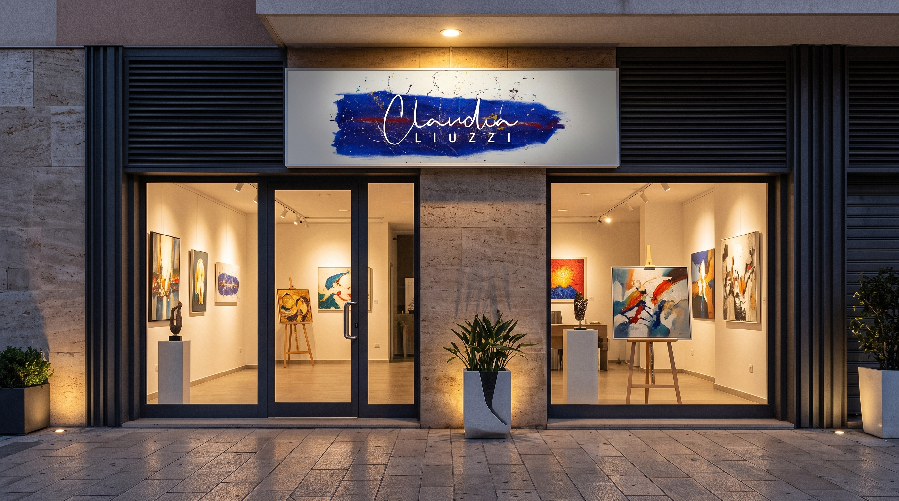
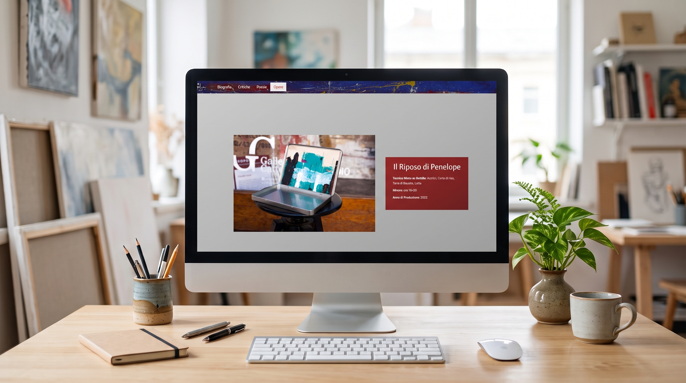
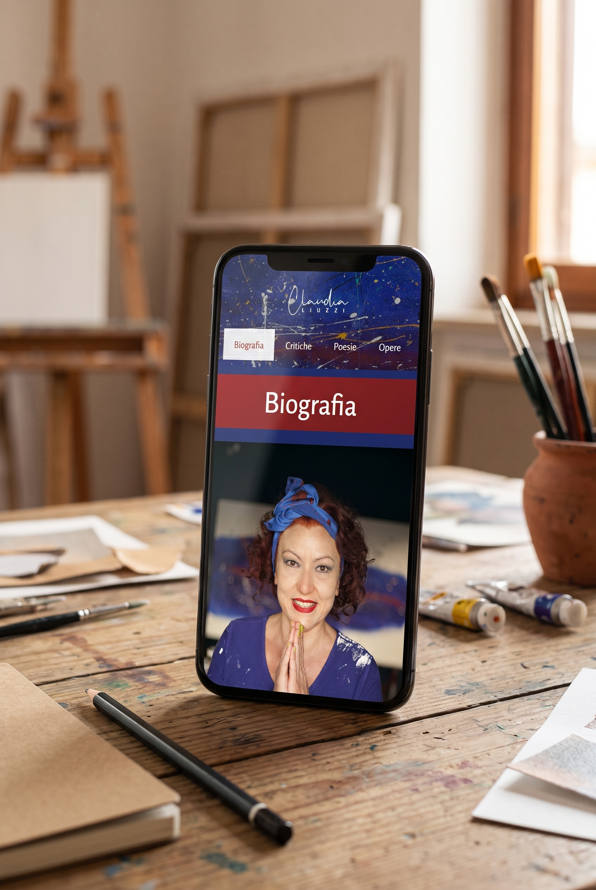
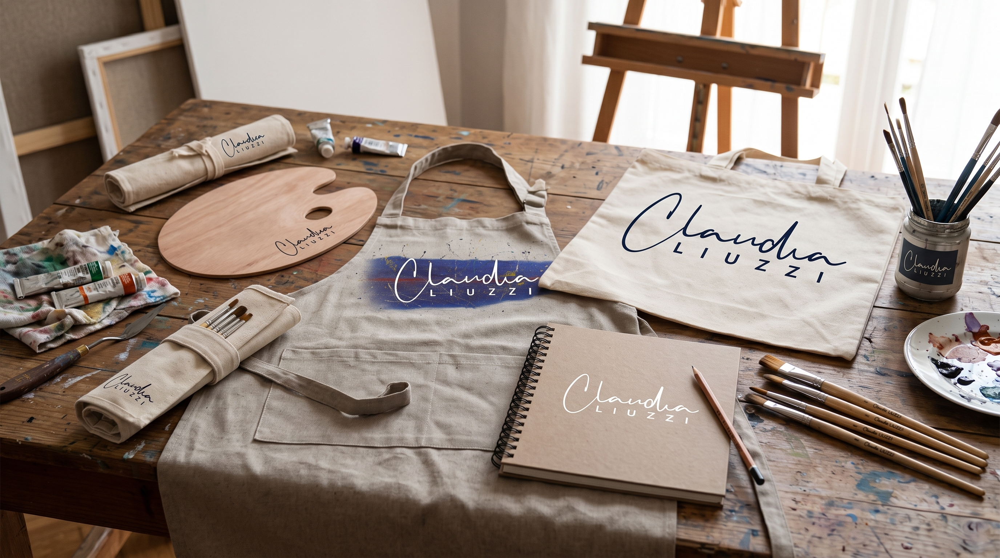
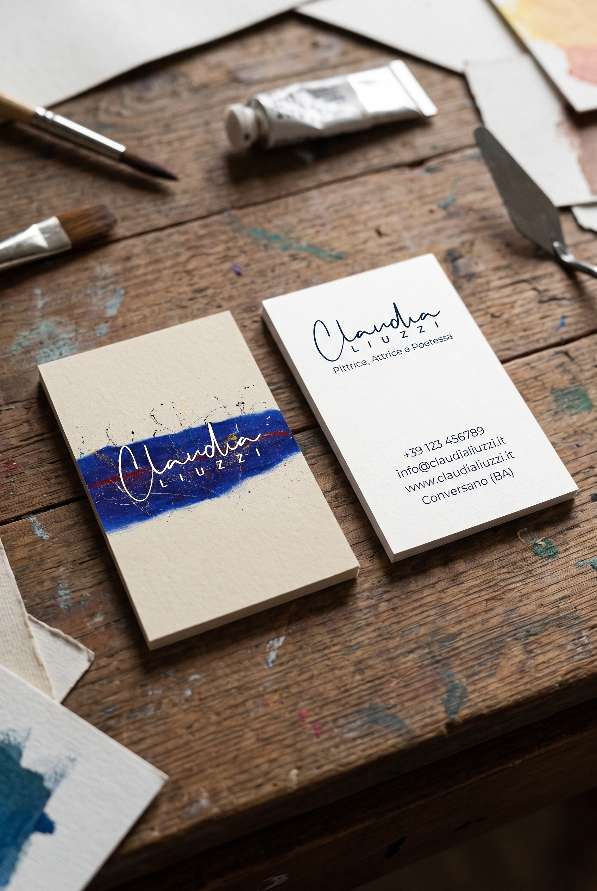
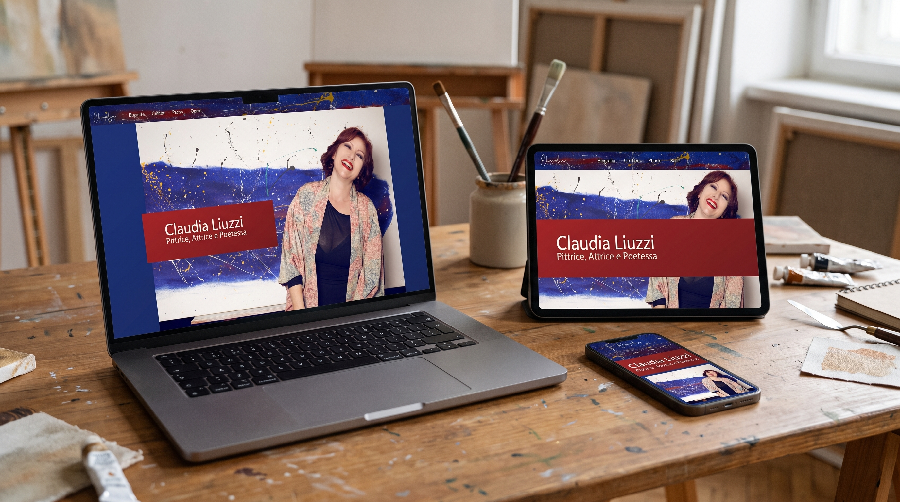

CLAUDIA LIUZZI
Progettazione e sviluppo del sito web ufficiale per Claudia Liuzzi, pittrice, attrice e poetessa pugliese. Un'architettura digitale creata seguendo i gusti dell'artista, pensata per valorizzare la matericità delle sue tele create con sabbie e terre dal mondo, intrecciando armonicamente percorso biografico, testi critici, versi poetici e catalogo delle esposizioni in un'esperienza visiva fluida e contemplativa.



«La poesia è fonte di nutrimento spirituale e i segni di essa sono depositati nei lavori pittorici quale legame indissolubile tra ineffabilità e materia.»


